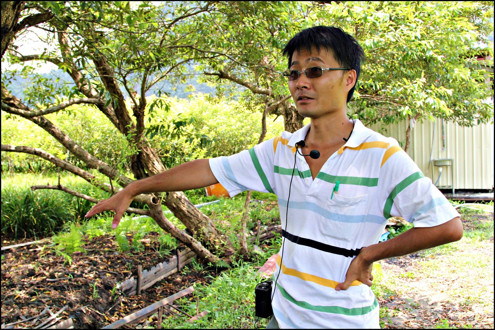
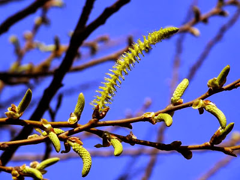

關心，從了解開始-珍稀水社柳復育成功
護樹協會 September,25,2015
1912年在日月潭發台灣特稀有植物「水社柳」，一度被視為瀕危植物。但在農夫王順瑜多年前買下頭社盆地的農地之後，開始復育，成功繁衍出數萬株水社柳新苗！
「水社柳」是當年日本學者在日月潭附近發現，所以就以日月潭的舊名「水社」來命名，王順瑜說「水社柳」根系複雜，可以緊緊抓住土壤，是很好的護岸植物，功效絕對比水泥還要好。
傳說中邵族的祖先們因為追逐白鹿，發現了日月潭而定居下來。現在的大家去的日月潭只是他們當年發現的「月潭」，而當時的「日潭」則是淤積成今天的「頭社盆地」所在地。
原本是獸醫的王順瑜，九年前回鄉務農，意外發現台灣特有種珍貴植物水社柳瀕臨滅絕，且全台剩不到一千棵，其中元老級的水社柳就在頭社，又因為政府要做水利工程，須將該土地上的水社柳砍除，於是王順瑜就買下該農地，展開水社柳復育工作。

王順瑜不但留住了全台灣最老的水社柳，後來也和特生中心合作用扦插的方式，讓數萬棵的苗木冒出新芽，成功打造出全世界最大的水社柳復育基地。
頭社盆地的表土下是沼澤地形，古人種水稻，盆地就像吸飽水的海綿，沒有下陷的問題，但後來轉旱作缺乏水源，就導致地盤下陷，每逢豪雨，總是嚴重淹水。
所以政府編了八年八百億的治水預算整治，但卻是工程越做這個盆地下陷情況越嚴重，從去年完工後已經足足下陷80公分之深，頭社盆地就是要有水才不會下陷，但是目前的水利工程只懂得「排水」，卻完全不懂得「保水」。
使得成功復育水社柳後，緊接著要面對的是整個生態平衡的結構問題，不應該奢望用工程手段來改變它，而是要找出適合的方法來與它相處，適地適種才是正途。

王爸爸說春天適合種樹的時候歡迎大家來跟他要水社柳去種，水社柳的呼吸方式很特別，種在水裡面也可以活下去的，這是台灣特有種七彩蝴蝶的蜜源植物，也是作為河川護岸固坡、水土保持樹種。
我們在現場看到王爸爸用高壓法正在想辦法幫水社柳傳宗接代，覺得很感動，明年春天以前一定要再大力宣傳，希望大家可以去頭社盆地跟王爸爸要水社柳回去種，這麼好的樹實在很美，看照片就知道在水社柳底下吃飯，真是浪漫到極點了。
這次『稻田裡的餐桌計劃-幸福果食』選擇到頭社盆地金針花季與台灣農夫王順瑜合作這個在水社柳樹下浪漫晚餐的活動，主辦單位說希望藉此機會推廣本土食材和幫助小農，有不少民眾從台北高雄趕來參加，真的是很感動。
特別的是其實這個浪漫是很有趣的，大家都是穿著高及大腿的雨鞋吃飯喔，因為雨後的盆地非常泥濘呢。